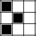

Cellular Automata is the proccess of using a grid of cells with simple rules to create complex patterns. In the game of life, the world is made up a grid of cells, these cells can either be alive (black) or dead (white).
 In this example the top-left, center, and bottom-left cells are alive. Every other cell is dead.
Now, let's step the simulation forward. We loop over every cell, every cell checks it's 8 neighbors and counts how many are alive. If a cell has less then two neighbors, it dies from lonelyness. If the cell has 2 or 3 neighbors, it lives to the next generation. If a cell has 4 or more neighbors, it dies from overpopulation. But, we also loop over the dead cells, in conways weird world, if a dead cell has exactly 3 alive neighbors, the cell turns alive as they reproduce. Note that all the changes are applied at the same time. We can boil this down to some simple rules:
-If an alive cell has less than 2, or more than 3 alive neighbors, it dies.
-If an alive cell has 2 or 3 alive neighbors it stays to the next generation.
-If a dead cell has exactly 3 alive neighbors, it turns into an alive cell.
We can write this in an easy to read format that is used to quickly convey the rules of other automata: B3/S23. The B3 stands for "Begin 3", if a dead cell has 3 neighbors, it begins it's life, it is born. The S23 stands for "Stay 2 or 3", if an alive cell has 2 or 3 neighbors, it stays to the next generation.
Continuing with our example, let's step it forward. First we loop through every cell and count their neighbors. The top-left and bottom-left cells would die from lonelyness in the next generation. The center cell would stay because it has 2 neighbors. The left-center cell would begin it's life because it has 3 neighbors.
This would be the next state of our example, and unfortunatly the last step too. If we step this simulation forward the remaining 2 cells would die from lonelyness, leaving no alive cells :(
This rule is explained in detail above. This truly is a classic example of cellular automata, it forms interesting, life like patterns. It forms colonies, gliders, hives, and, if you set the right starting states, people have built fully functional computers and logic components with this rule.
This automata has a scarier looking name than the simple B2/S23, but it's still a simple rule! If an alive cell has 4 or more neighbors it stays, and if a dead cell has 5 or more neighbors it begins. Using this automata resaults in cave-like patterns if we imagine alive cells as walls and dead cells as the floor. The example above was initialized as noise, every pixel had a random starting state. After a few generation the cells settled into an equilibrium state, where no cells are created or destroyed every step. If you use this in a game, you can easily generate cavernous areas for the player to explore around.
Just note, if you install this rule using the link below you have to click to step forward the simulation, it's not broken I swear.
This is definitly my favorite kind of cellular automata. I don't know why, but when I first saw it in a program called "The Powder Toy" I just fell in love with it. With the Amoeba rule, cells will form chaotic patterns that resemble amoeba with how they move. An interesting thing about this rule that I only read about shortly before writing this, is that the patterns it forms will slowly grow if they're above a certain size, ~100 x 100. Below that and they will slowly shrink.
Download (Zip, 771 KB)